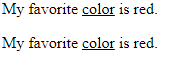

back to home
HTML "ins" & "u" tag
The HTML
< ins>
element defines inserted/added text or underline.
< p>My favorite < ins>color< /ins> is red.< /p>
< p>My favorite < u>color< /u> is red.< /p>
Displays
